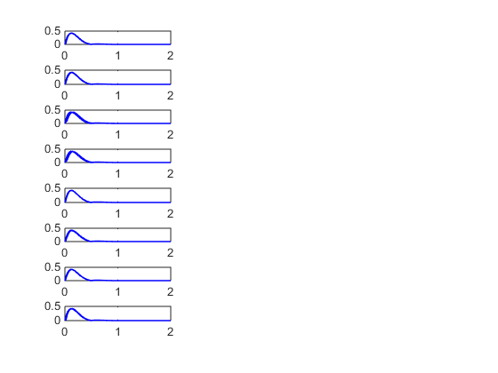
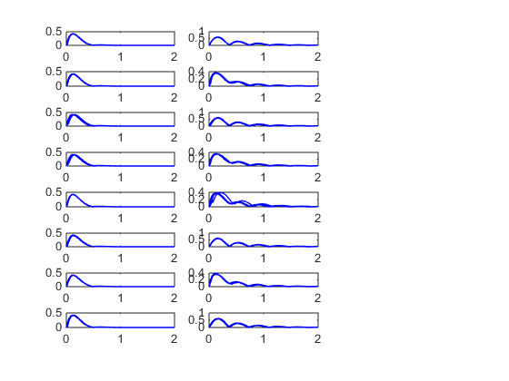
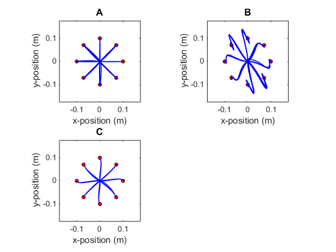
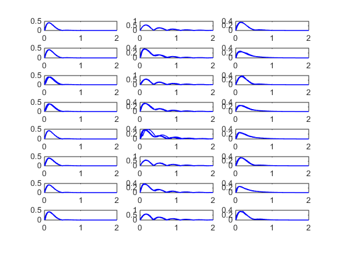
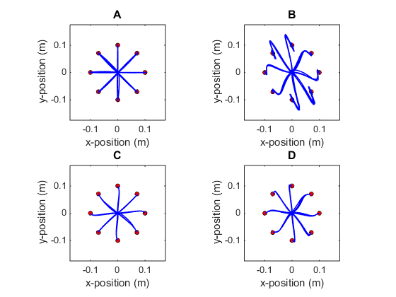

RADP for Sensorimotor Control
figure(1)
subplot(221)
draw_bg
x0=[0,.1];plotTimecourse(x0, 'NF', 1);
x0=[0,-.1];plotTimecourse(x0, 'NF',3);
x0=[.1,0];plotTimecourse(x0, 'NF', 5);
x0=[-.1,0];plotTimecourse(x0, 'NF',7);
x0=[1,1]/10*sqrt(2)/2;plotTimecourse(x0, 'NF', 2);
x0=[-1,-1]/10*sqrt(2)/2;plotTimecourse(x0, 'NF',4);
x0=[-1,1]/10*sqrt(2)/2;plotTimecourse(x0, 'NF', 6);
x0=[1,-1]/10*sqrt(2)/2;plotTimecourse(x0, 'NF', 8);
ylabel('y-position (m)')
xlabel('x-position (m)')
title('A', 'fontsize', 12)
hold off


figure(1)
subplot(222)
draw_bg
x0=[0,.1];plotTimecourse(x0, 'VF', 1);
x0=[0,-.1];plotTimecourse(x0, 'VF',3);
x0=[.1,0];plotTimecourse(x0, 'VF', 5);
x0=[-.1,0];plotTimecourse(x0, 'VF',7);
x0=[1,1]/10*sqrt(2)/2;plotTimecourse(x0, 'VF', 2);
x0=[-1,-1]/10*sqrt(2)/2;plotTimecourse(x0, 'VF',4);
x0=[-1,1]/10*sqrt(2)/2;plotTimecourse(x0, 'VF', 6);
x0=[1,-1]/10*sqrt(2)/2;plotTimecourse(x0, 'VF', 8);
xlabel('x-position (m)')
ylabel('y-position (m)')
title('B', 'fontsize', 12)
hold off


figure(1)
subplot(223)
draw_bg
x0=[0,.1];plotTimecourse(x0, 'AE', 1);
x0=[0,-.1];plotTimecourse(x0, 'AE',3);
x0=[.1,0];plotTimecourse(x0, 'AE', 5);
x0=[-.1,0];plotTimecourse(x0, 'AE',7);
x0=[1,1]/10*sqrt(2)/2;plotTimecourse(x0, 'AE', 2);
x0=[-1,-1]/10*sqrt(2)/2;plotTimecourse(x0, 'AE',4);
x0=[-1,1]/10*sqrt(2)/2;plotTimecourse(x0, 'AE', 6);
x0=[1,-1]/10*sqrt(2)/2;plotTimecourse(x0, 'AE', 8);
xlabel('x-position (m)')
ylabel('y-position (m)')
title('C', 'fontsize', 12)
hold off

figure(1)
subplot(224)
draw_bg
x0=[0,.1];plotTimecourse(x0, 'AL', 1);
x0=[0,-.1];plotTimecourse(x0, 'AL',3);
x0=[.1,0];plotTimecourse(x0, 'AL', 5);
x0=[-.1,0];plotTimecourse(x0, 'AL',7);
x0=[1,1]/10*sqrt(2)/2;plotTimecourse(x0, 'AL', 2);
x0=[-1,-1]/10*sqrt(2)/2;plotTimecourse(x0, 'AL',4);
x0=[-1,1]/10*sqrt(2)/2;plotTimecourse(x0, 'AL', 6);
x0=[1,-1]/10*sqrt(2)/2;plotTimecourse(x0, 'AL', 8);
xlabel('x-position (m)')
ylabel('y-position (m)')
title('D', 'fontsize', 12)
hold off
 